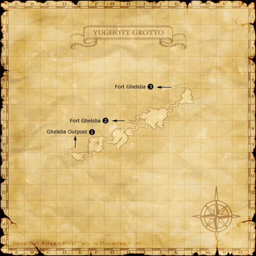
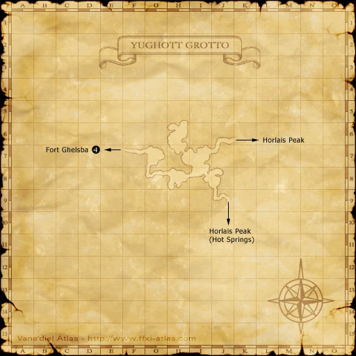

Before you begin
Be allied with Windurst, have Rank 2, and finish the preceding required story steps. Raise Rank Points if the mission is not offered.
People in this mission


Walkthrough
- Accept the mission and obtain the letter from Kupipi in Heavens Tower. This route visits Bastok first.
- Meet Patt-Pott in Metalworks (I-7), Pius (J-8), then Grohm (H-9).
- Mine Gravel in Palborough Mines. Feed it into the third-floor refiner (I-6), pull its lever, and collect Mythril Sand from the lever below. Trade the sand to Patt-Pott and speak again.
- Meet Kasaroro in Northern San d’Oria (H-9), then Halver in the Chateau.
- Reach Horlais Peak through Ghelsba, Fort Ghelsba and Yughott Grotto. Defeat Spotter and Dread Dragon in The Rank 2 Final Mission.
- Report to Kasaroro, then return to Kupipi.
Important notes
- This is the Bastok-first route. If San d’Oria was your first destination, the alternate route requires Vatgit and later the Waughroon Shrine battle; follow the reference for that branch.
Locations and references
| Place / NPC | Location | Reference |
|---|---|---|
| Bastok consul | Metalworks (I-7) | Location reference |
| San d’Oria consul | Northern San d’Oria (H-9) | Location reference |
Completion and reward
Rank 3; 3,000 gil
Area maps
Open a zone below, then select a map to enlarge it. Match the named floors and grid coordinates in the steps; these are reference area maps, not a live position tracker.
Heavens Tower


Metalworks


Palborough Mines


Northern San d'Oria


Fort Ghelsba


Yughott Grotto






References
HorizonXI Wiki: Windurst 2-3 · LandSandBoat mission definition
The route summary covers the original story. Other servers’ extra rewards, level-cap settings and Trust rules are not promises of Zenith behavior. Confirm battlefield entry conditions in game.
Additional level-75 reference
| Mission Name | The Three Kingdoms |
| Number | 2-3 |
| Start NPC | Any Windurst Gate Guard |
| Requirements | Mission: 2-1, Sufficient Rank Points |
| Suggested Level | 25 |
| Items Needed | |
| Repeatable | No |
| Title Granted | - Warchief Wrecker - Dark Dragon Slayer - Dread Dragon Slayer - Certified Adventurer |
| Reward | Rank 3, 3000 gil, Adventurer's Certificate, Mog Wardrobe #1 |
| ← Previous Mission | Next Mission → |
| A Testing Time | To Each His Own Right |
| Replay Cutscenes | |
| The Three Kingdoms (pt.1 or 2) |
Mashua - Heavens Tower |
| Optional: The Three Kingdoms (pt.3) |
Mashua - Heavens Tower |
| Bastok -> San d'Oria The Three Kingdoms (pt.1-2) |
Taulluque - Metalworks (I-8) |
| The Rank 2 Final Mission (pt.1-2) |
Goblin Footprint - Horlais Peak |
Walkthrough
Starting the Mission
- As soon as you accept this mission, the gate guard will send you to Heavens Tower (H-6/7 in Windurst Walls).
- Go inside the Door: Clerical Chamber and talk to Kupipi who is behind the counter. She will tell you about the other two nations and hand you a key item Letter to the consuls. You can do the 2 nations in any order.
San d'Oria to Bastok
- Talk to Heruze-Moruze at H-9 in Northern San d'Oria (in the Windurstian Consul), then speak to Kasaroro in the back room.
- Next go to Chateau d'Oraguille and talk to Halver (I-9). He will request that you to head to Ghelsba Outpost.
- Go out to H-7 in Ghelsba Outpost to find an Orc named Warchief Vatgit. Defeat him (he can be soloed at level 18).
- Report back to Kasaroro in the Windurstian Consul. The San d'Oria part of the mission is complete.
- Now make your way to the Windurstian Consul in Bastok Metalworks. Talk to Patt-Pott at I-7. He will direct you to speak to Pius at the Department of Industry in the President's Office. Then you will be directed to speak to Grohm who is in the Craftman's Eatery.
- After the cutscenes in Bastok, you will need to form a level 25 party (highly suggested that you have a BLM or RDM for sleep) and make your way to Palborough Mines.
- You will only need Sneak while in the Mines. Make your way to the third floor by taking an elevator located at I-8 (or just use the handy maps to make your way there however you like).
- Everyone will need Sneak on the third floor. The party must have equipment that is legal for the BCNM fight as it is capped at level 25. The zoneline for the BCNM is located at H-10 on the third floor.
- Only 6 members of the party will be allowed to enter this battlefield. When you're ready to enter, have one of the people who has the Mission active click on the Burning Circle and enter the battlefield. You will be fighting:
- Note: Good strategy is to fight the Seeker first, then attack the dragon.
- Dark Dragon
- Seeker
- Once you've defeated the BCNM, go talk to Patt-Pott again.
- Now head all the way back to Heaven's Tower in Windurst Walls and talk to Kupipi to finish the Mission.
Bastok to San d'Oria
- Go to the Windurstian Consul in Bastok Metalworks and talk to Patt-Pott at I-7.
- Next head to the President's Office at J-8. Talk to Pius in the Department of Industry.
- You will be sent to talk to Grohm (H-9) who will hand you 3 Pickaxes. It is suggested to buy more Pickaxes as they can break.
- It is suggested that you buy the Map of the Palborough Mines as well as Silent Oils (if necessary; some Quadav near the refiner on the second floor will check Easy Prey or higher at level 25).
- Go to Palborough Mines to try and mine up some Mine Gravel from the Mythril Seams that are found throughout. One is located at I-8 on the first floor on the west side of the river, another at I-9 on the third floor. Trade a Pickaxe to the Mythril Seam until you receive the Mine Gravel. Alternatively, you can actually buy the Mine Gravel from the AH.
- Once you get the gravel, make your way to I-6 on the second floor. You will find a refiner with a lid and a lever. Trade the gravel to the refiner and pull the lever.
- Just drop off the ledge here to the floor below to find another lever. Pull this lever and you will receive some Mythril Sand.
- Now head back to Patt-Pott in Metalworks and trade the sand to him. Talk to him one more time.
- Talk to Kasaroro at H-9 in Northern San d'Oria (in the Windurstian Consul).
- Go talk to Halver in Chateau d'Oraguille at I-9.
- You will need to form a level 25 party (highly suggested that you have a BLM or RDM for sleep) and make your way to Horlais Peak. You need to go through Ghelsba Outpost to get here. From Ghelsba Outpost you can go through either Yughott Grotto or Fort Ghelsba - follow the maps to make your way there.
- You will need Sneak and Invisible while in the higher level areas.
- The party must have equipment that is legal for the BCNM fight as it is capped at level 25. Only 6 members of the party will be allowed to enter this battlefield. When you're ready to enter, have one of the people who has the Mission active click on the Burning Circle and enter the battlefield. You will be fighting:
- Note: Good strategy is to fight the Spotter first, then attack the dragon.
- Dread Dragon
- Spotter
- Once you've defeated the BCNM, go talk to Kasaroro again.
- Now head all the way back to Heaven's Tower in Windurst Walls and talk to Kupipi to finish the Mission.
Notes
- After a cutscene, cast your prefight buffs. Have the BLM or RDM to sleep the dragon while everyone attacks the Ahirman. The Ahirman must be silenced. The dragon has AOE Paralyze and a single target Petrify attack. Once the Ahirman is defeated, the dragon will go down quickly.
Game Description
- Mission Orders
- Determine the state of affairs in San d'Oria and Bastok, and render assistance on behalf of Heavens Tower. Inquire at our consulate in each country for more information. Traveling by ship from Mhaura to Selbina is recommended.
- Mission Orders (San d'Oria -> Bastok)
-
- Journey to San d'Oria
- Go to the highest camp in the Ghelsba Outpost and defeat Warchief Vatgit.
- Journey to Bastok
- Something strange is afoot in the deepest levels of the Quadav-held Palborough Mines. Investigate and report. An official named Pius will give you more detailed orders.
- Mission Orders (Bastok -> San d'Oria)
-
- Journey to Bastok
- Survey Bastokan mining technology, and retrieve some mythril sand from the Palborough Mines. An official named Pius will give you more detailed orders.
- Journey to San d'Oria
- Investigate the Yughott Grotto deep inside the Ghelsba Outpost.
Adapted from Eden Wiki: The Three Kingdoms · Contributors and history · CC BY-SA 4.0. Revision 8534. Layout, links and optional background text adapted for Zenith.